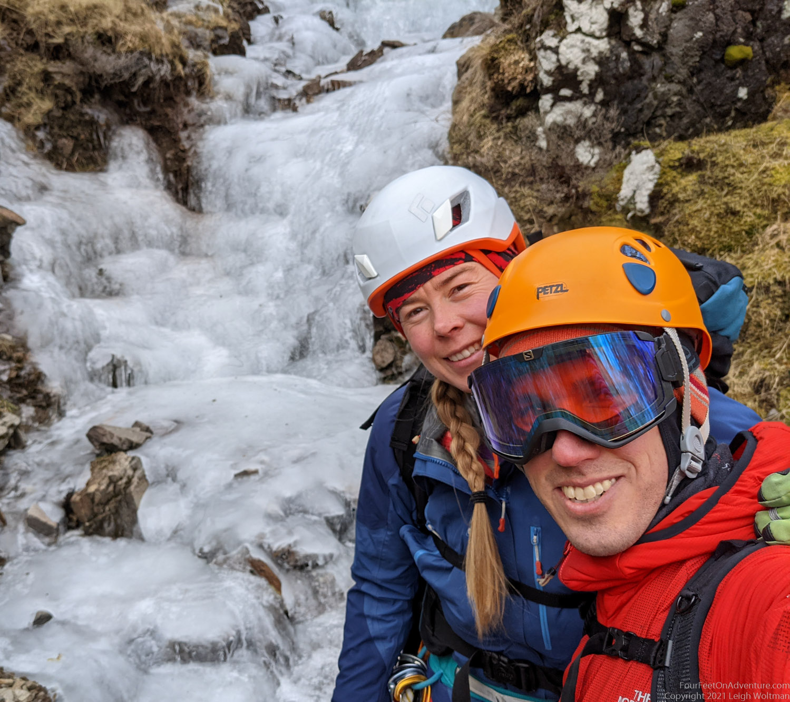
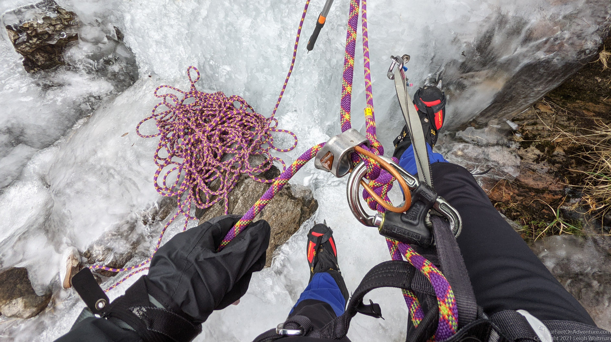
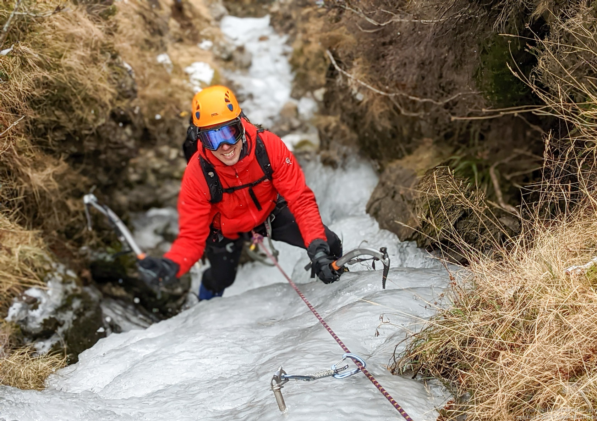
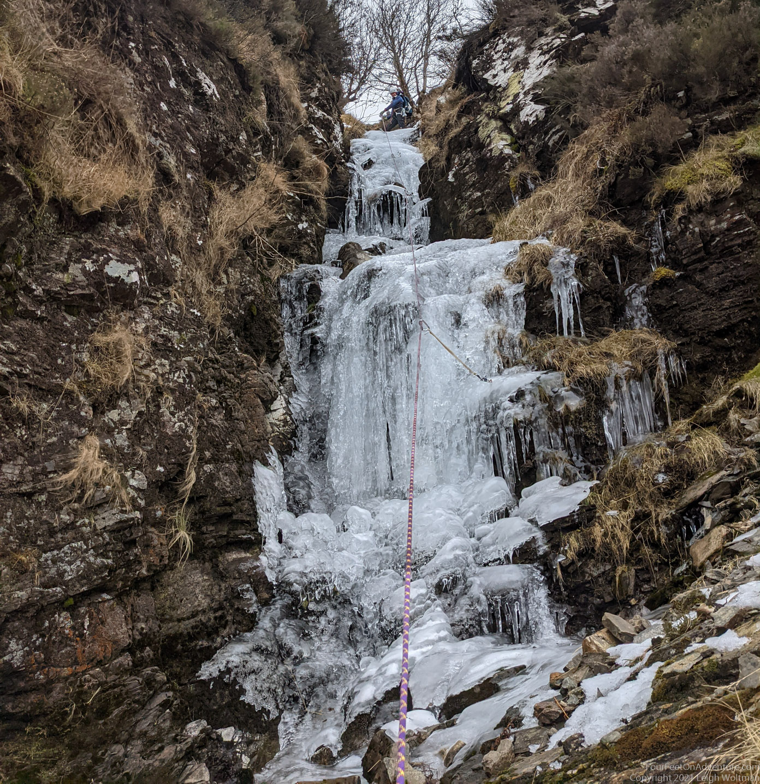
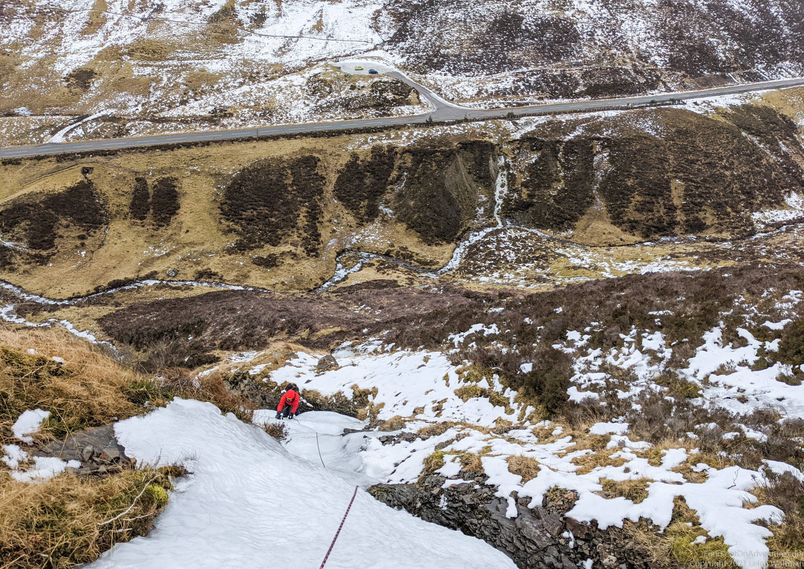
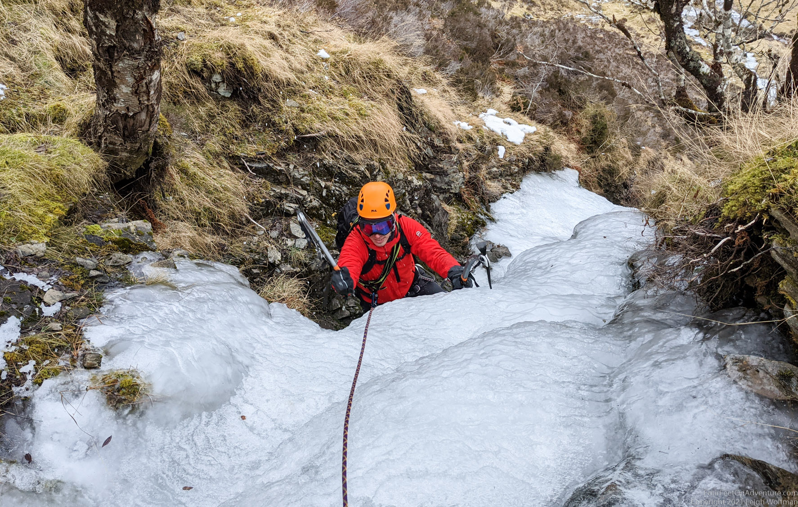
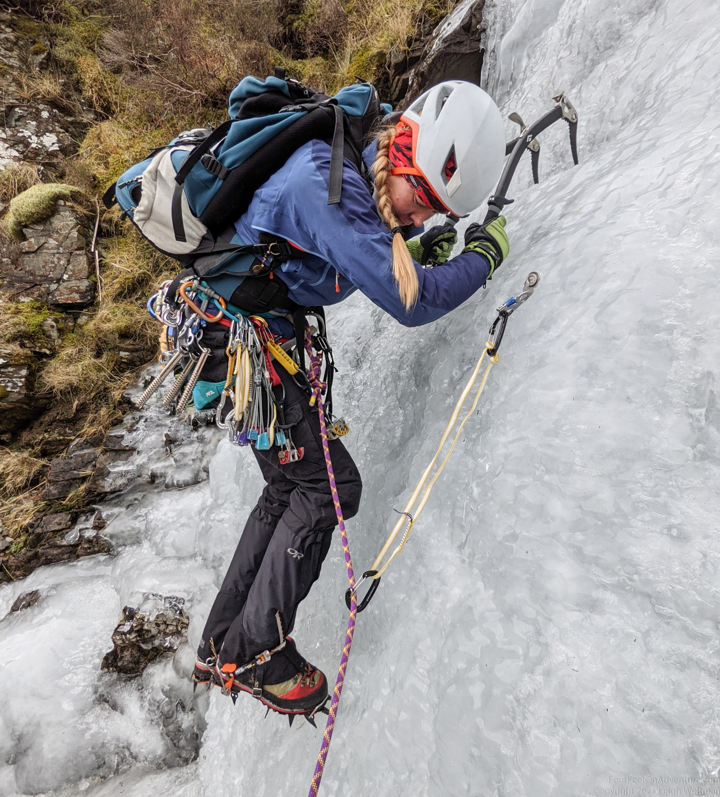
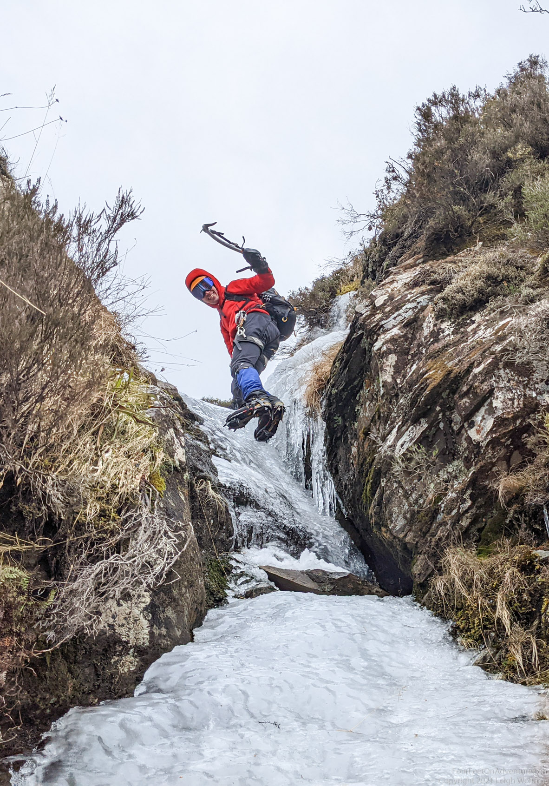
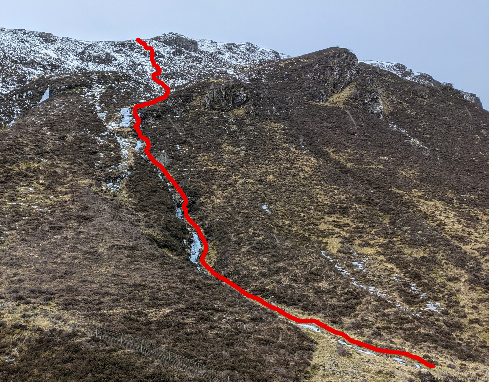
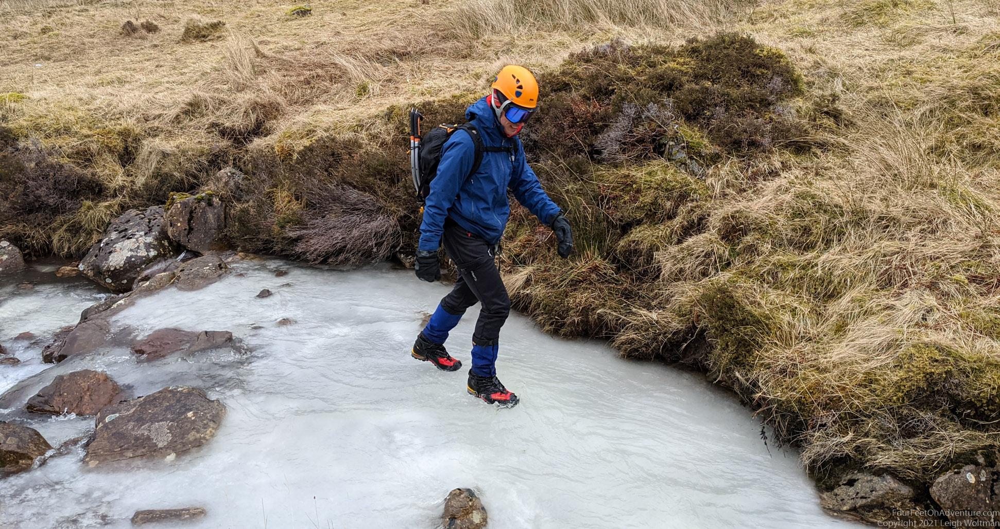

Most likely this climb can not be found in any guide books. We named it ourselves, as we were officially together for 5 years. How better to celebrate than with an ice climb!
Driving back from Beinn Eighe the day before we spotted this iced over waterfall in a gully on the side of the road near Kinlochewe. It looked promising. We have had cold weather somewhat consistently since New Year, the last week was uniquely cold with night temperatures where we live at sea level around -8 degrees Celsius. However, the wind would shift and it would rise the next day. Tomorrow might be the last chance.
The alarm went off early for a Sunday, particularly because the target decided the night before likely wouldn't be around for much further. The temperature was indeed rising, the winter temperatures from the day before were indeed gone. It would still be a couple hours before we would even reach the base of the climb.
We parked at the scenic Glen Docherty Viewpoint, which is just the pullout on the side of the road looking down the impressive valley the road takes to Kinlochewe. As we hadn't descended yet, the road was high, keeping our temperature low. Even the car park was icy so we slid the car like a curling rock close to the edge.
Across the road, a steep hill side was cut by numerous creeks collecting water from the top of the plateau and feeding it into the main creek that follows the view down this valley. After hiking over the guardrail, we slipped our way down to the main creek. The hillside was still icy and the ground frozen, so it seemed like we had caught the ice. Across the main creek, a tall deer fence blocked access to our intended creek and there were no access gates. Fortunately for us, the creek had other ideas and we found a spot where it had washed out the ground under a section of deer fence. Barely a duck, and we were under the fence.

We found ourselves now at the base of our frozen tributary creek. An icy seam stretching up the hillside. Time would tell how continuous it would be.
After stepping up a flat section of frozen creek, we found our first real step upwards. It would be the first real ice climb of the season, with gear and all. Roped in, Annette started to lead. We had solid ice, exciting to hack and kick into for good solid placements. The ice was soft, making easy swings with the axes. In many spots, the stream of water could be seen or even more so heard underneath our platform of ice.

We were able to scramble for sections on our crampons, but at the more vertical sections, we needed to tie in and belay up. We continued making progress up the wall of the valley, alternating between flatter sections and actual pitches of climbing.


We had a lunch break after a couple hours of heading upwards. The car was easily visible in the parking lot below us, but it was definitely getting further and further away.


Our next ice section was making it very obvious that it wouldn't be around for much longer. The creek was now increasing in water volume, and here the water was flowing over the ice, making an ice fall with a very wet layer on top. The gloves instantly soaked when threading in an ice screw. Splashes of icy water, sprinkled the face, and drained into the pants, making this shower a particularly memorable experience.

Stepping further and further, the ice is now no longer solid in this section which is a little more exposed to the sun. We are now just walking in deep snow, with our crampons occasionally catching a rock in the creek bed below giving a sudden jolt to the step.

The last vertical section of ice was small but a fitting final step up on to the obvious top of the plateau.

At this point, we found a less steep part to slowly step down back to the car. The wet snow was sticking to everything; balling in our steps as we stumbled over our crampon points. But it quickly disappeared as the whole hillside was becoming bare. At the bottom, the main creek of the valley was really flowing now, with several inches of water. We had made an ice climb out of the day as it quickly flowed away.
